<%- include('./layout/header'); -%>
快速搜尋
地區
不分區
台北市
新北市
基隆市
新竹市
桃園市
新竹縣
宜蘭縣
臺中市
苗栗縣
彰化縣
南投縣
雲林縣
高雄市
臺南市
嘉義市
嘉義縣
屏東縣
花蓮縣
臺東縣
類別
請選擇想要的美食類別
下午茶
早午餐、輕食
精選湯底鍋
國民小吃
燒烤、炸物
氣氛餐酒館
關鍵字
搜尋
吃貨糾察隊
帶你發掘美食
想好好吃頓飯卻總是
身在異地不曉得要吃什麼？
想不起來之前好吃的店在哪？
不要高評價，我要真寶藏！
讓你享受美食變得更簡單！
快速搜尋所在區域熱門美食
登入會員收藏那間好吃的店
吃貨前輩們最真實評價都在這
讓我們一起
美食分享，味蕾同行
熱門餐點
大啖美食，不需要理由
平安京茶室
4.5
台北市 大安區
井上豆花
4.0
桃園市 桃園區
敲我Ciao.O
5.0
新北市 新莊區
美食類別
品味共享，美食相伴
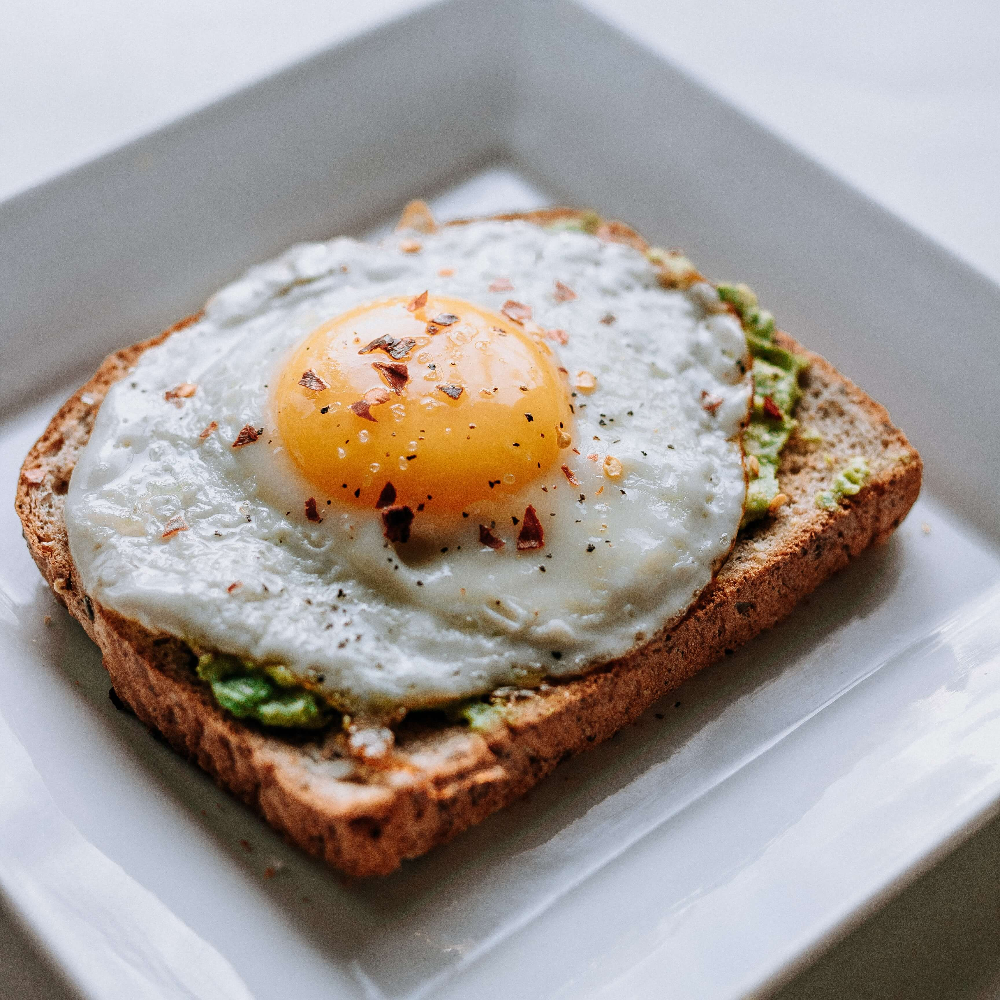 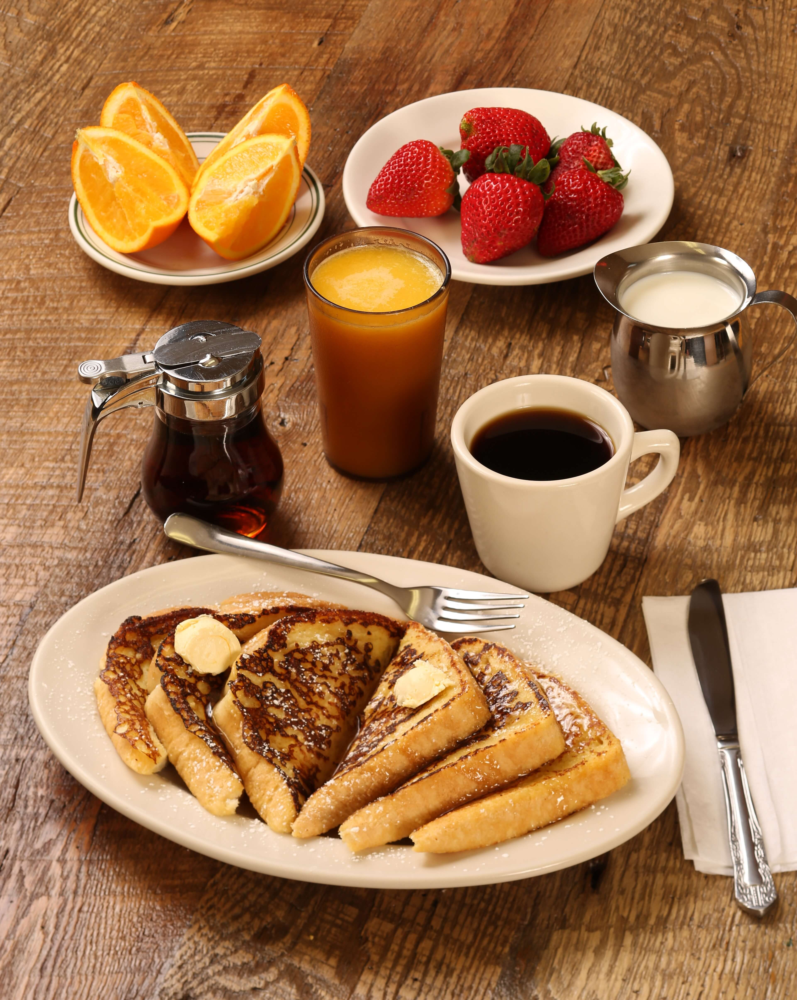
早午餐、輕食
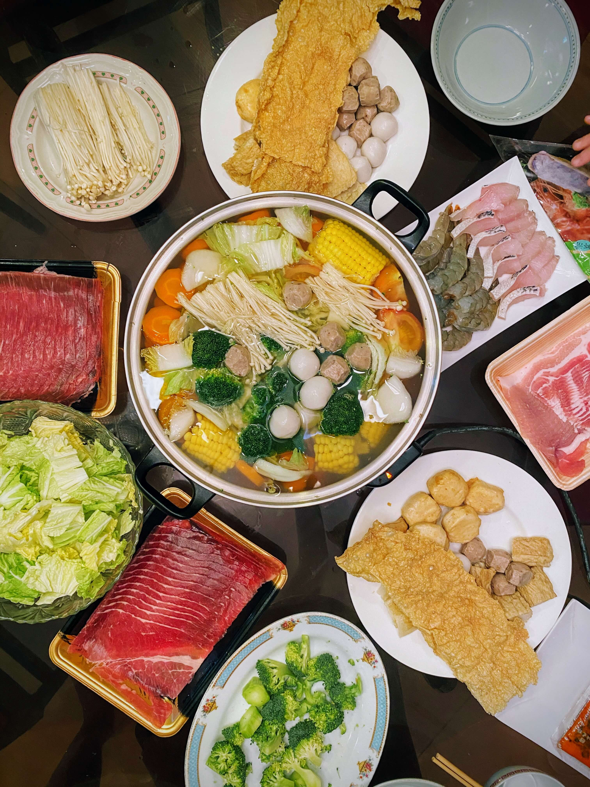 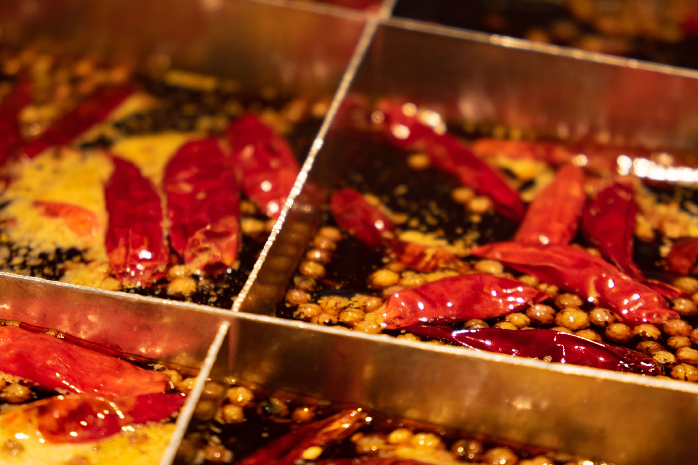 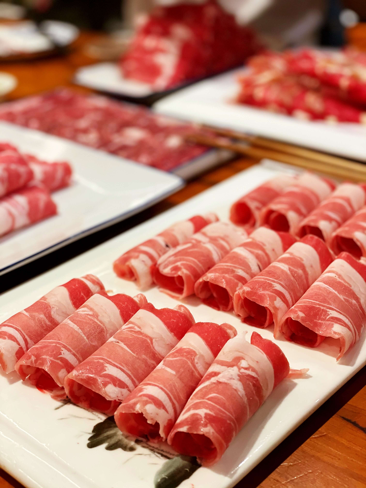
精選湯底鐹物
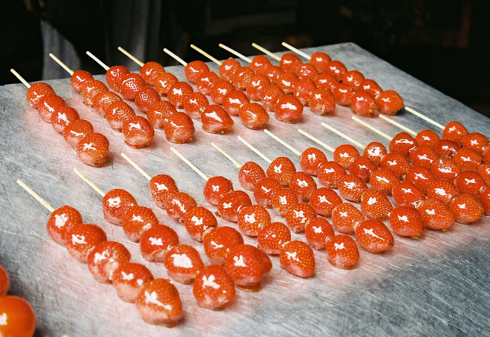
國民小吃
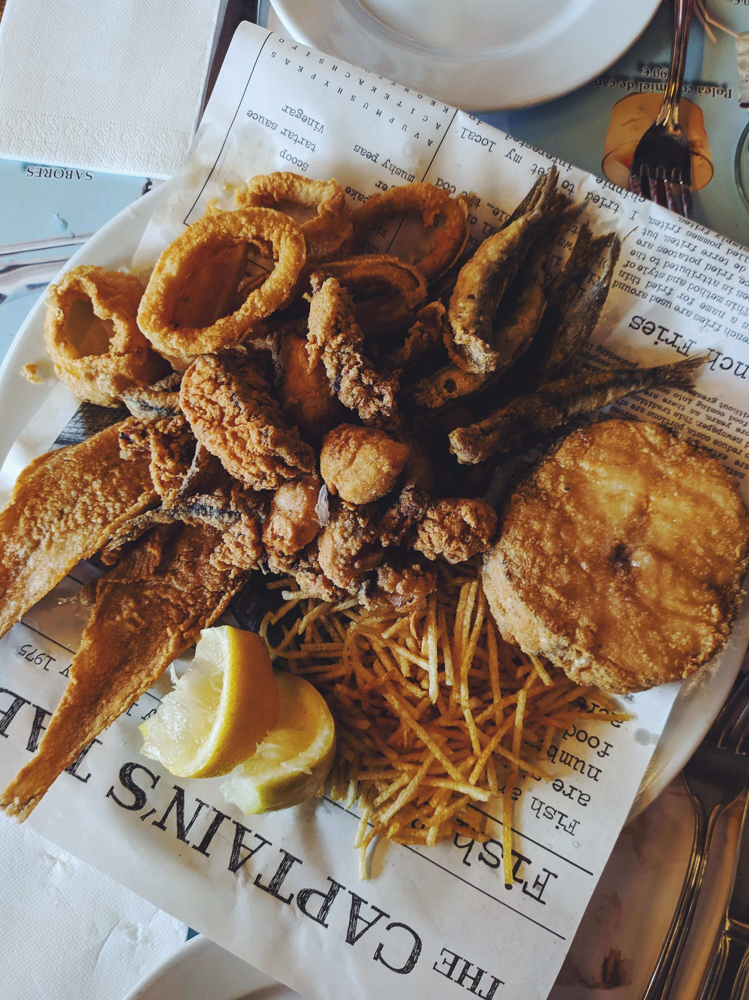
燒烤、炸物
探索新店
發現更多美食寶藏
平安京茶室
4.5
台北市 大安區
井上豆花
4.0
桃園市 桃園區
敲我Ciao.O
5.0
新北市 新莊區
探索更多新店
各方推薦美食
超道地串燒居酒屋，聚餐與聯絡感情好場所！
在這家美味的深夜食堂，您將品嘗到職人料理的精湛技藝！絕妙的串燒和炭火燒烤令人垂涎欲滴。不僅美味可口，現場氛圍也相當熱鬧，是您夜晚放鬆享受美食的絕佳選擇！內有包廂，如想與朋友來場...
By 愛吃星球
2023/07/10
好吃的客家熱炒桌菜，還有 KTV 包廂！
在這家餐廳，您不僅可以品嘗到美味的客家熱炒桌菜，還可以在KTV包廂裡盡情歡唱！豐富的菜單提供各式各樣的熱炒料理，口味地道，讓您嚐盡客家美食的獨特風味。用餐後，和好友們一起互相...
By peihsuan
2023/07/10
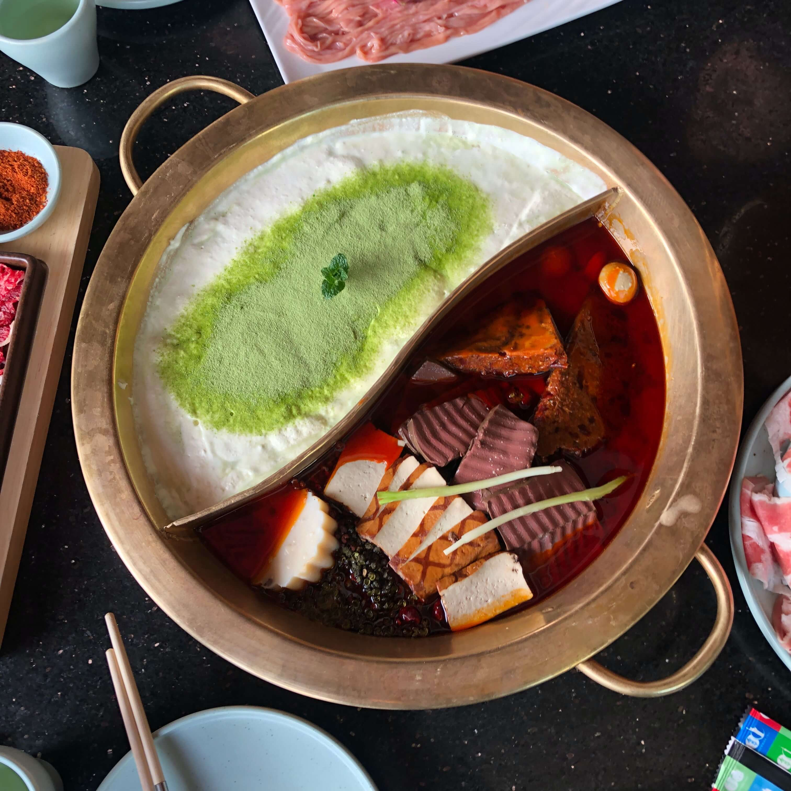
品味熱騰騰的鍋物美食之旅 at《青花驕》
最近天氣濕冷，星期五下班約了大學同學，決定來吃收藏很久《青花驕》，今天用餐的是位於國父紀念館站1號出口附近的分店，整體裝潢很氣派、食材也很新鮮，冷冷的天配上暖暖的鍋，心滿意足。...
By 愛吃星球
2023/07/10
看更多好文分享
盡情大快朵頤
發現無限滋味
探索美食
<%- include('./layout/footer'); -%>

 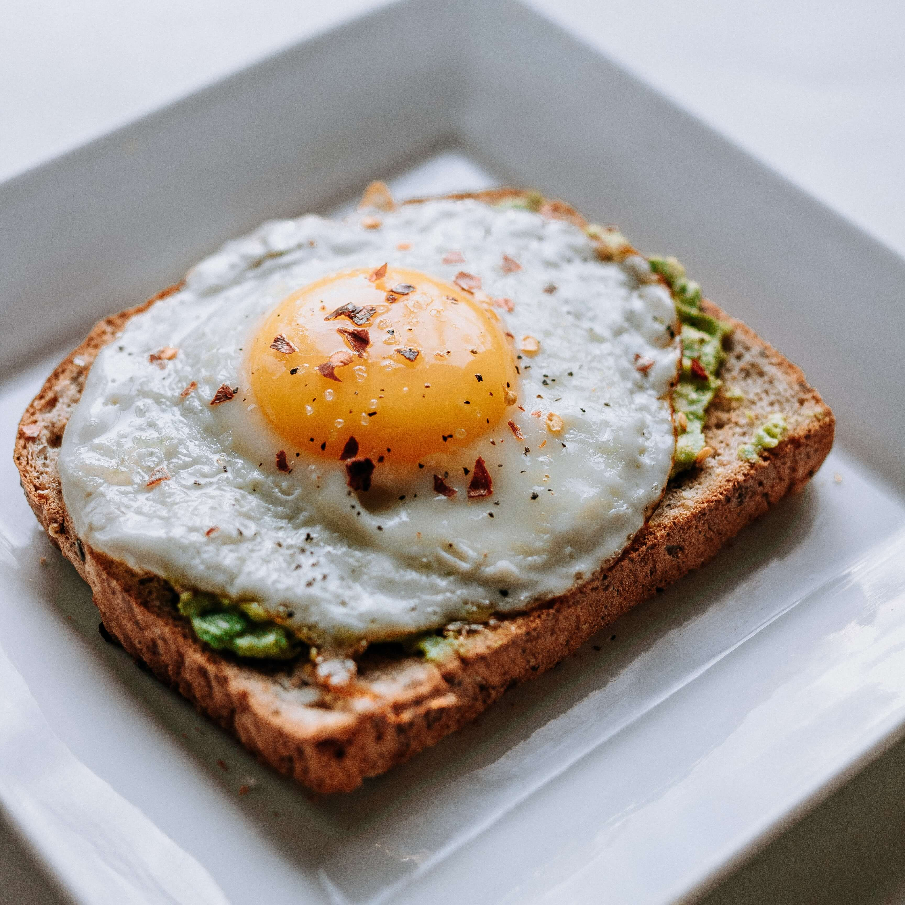
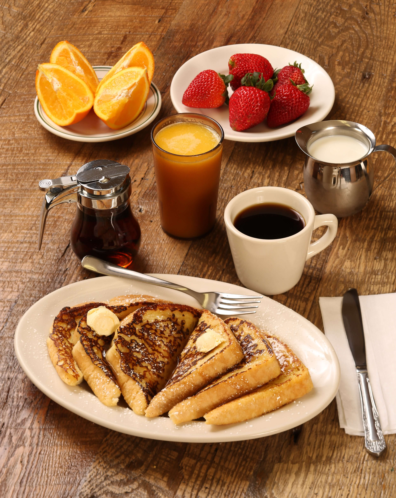
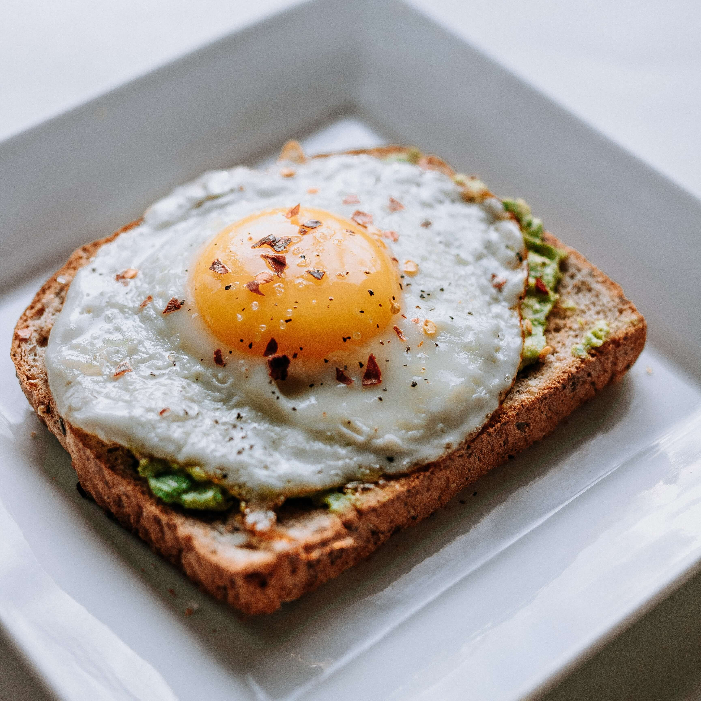
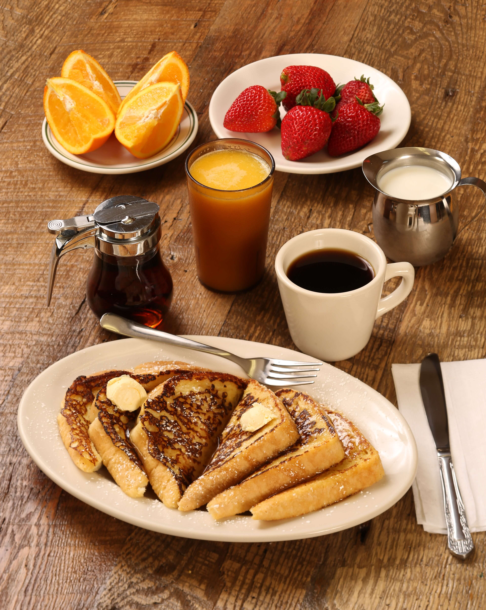